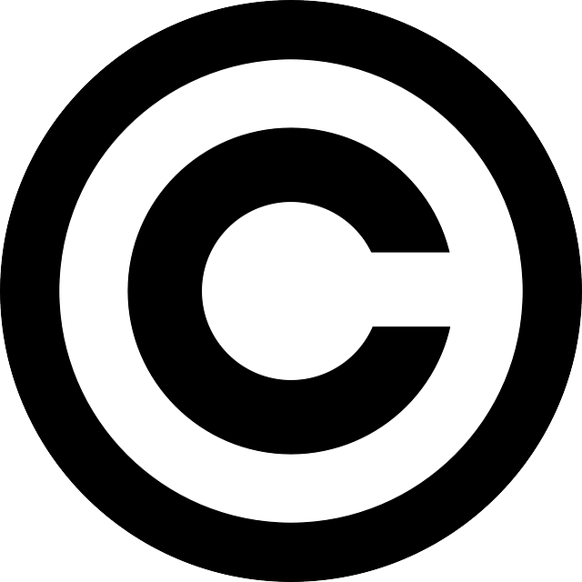

Internet nám umožňuje rýchly prístup k filmom, hudbe, obrázkom a rôznym dokumentom. Mnohí používatelia si však neuvedomujú, že tieto diela môžu byť chránené autorským právom. To znamená, že ich nemôžeme voľne kopírovať, upravovať alebo šíriť bez súhlasu autora.
Autorské práva sú zákony, ktoré chránia tvorcov – napríklad hudobníkov, vývojárov, fotografov či spisovateľov. Ak porušíme tieto práva, môžeme sa dostať do právnych problémov, prípadne zaplatiť pokutu. Preto je dôležité vedieť, čo môžeme používať a za akých podmienok.
Nie všetky diela sú chránené rovnakým spôsobom. Niektoré sú úplne voľné na použitie, iné len za určitých podmienok (napr. uvedenie autora). Existujú aj licencie ako Creative Commons, ktoré umožňujú zdieľať dielo, ale s rešpektom k pravidlám.
Na školách, v prezentáciách a pri tvorbe projektov je dôležité vedieť, odkiaľ sme materiály zobrali. Napríklad, ak použijeme cudziu fotografiu bez povolenia, môžeme porušiť zákon. Vždy je lepšie využiť otvorené databázy ako Pixabay, Pexels alebo Unsplash, ktoré ponúkajú legálne obrázky zadarmo.
Symbol autorských práv: Podstránky: